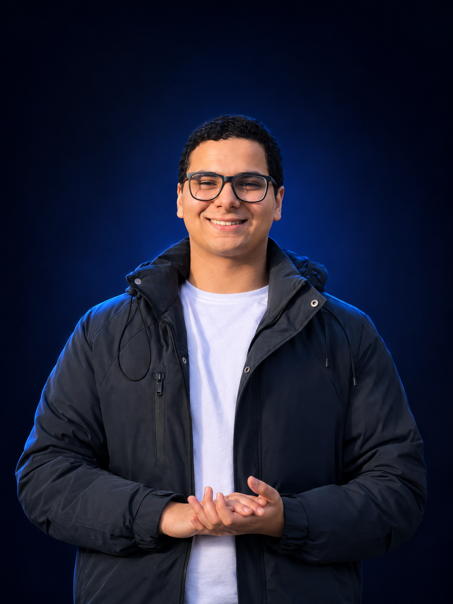
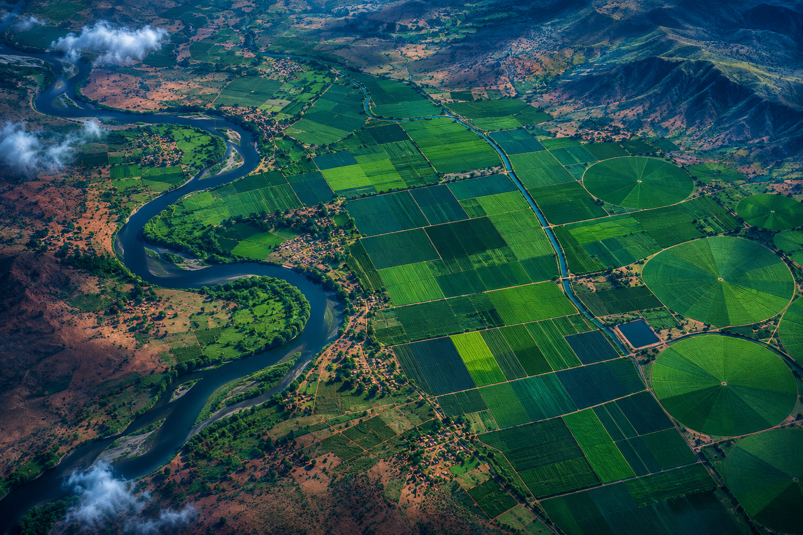

AI-GENERATED PROJECT ILLUSTRATION
RECYCLE_NETCOMPUTER VISION
Recycle Net
Designed and trained 18 custom CNN models for multi-class image classification, with systematic benchmarking and architecture search.
PyTorchCNNClassification
I’m Omar Reyad. I build AI systems that see, understand, and act — helping you turn ambitious ideas into practical tools.

From a single workflow to a complete AI solution, I help you find the right approach and bring it to life.
Purpose-built AI agents that reason through tasks, use tools, and connect your business systems.
↗Connect APIs, streamline repetitive work, and build workflows that move information where it needs to go.
↗Adapt language models to your domain with LoRA, QLoRA, and evaluation grounded in your use case.
↗Conversational assistants that retrieve relevant knowledge from your documents and support your users.
↗Custom image classification, detection, segmentation, and image processing pipelines for your visual data.
↗Forecasting, recommendation systems, and predictive models built around the problem you need to solve.
↗Designed and trained 18 custom CNN models for multi-class image classification, with systematic benchmarking and architecture search.

AI-GENERATED PROJECT ILLUSTRATIONA STISA competition project using satellite data to analyze land conditions, forecast changes, and deliver updates through WhatsApp.
An interactive Python and Tkinter toolkit for filtering, edge detection, and segmentation of grayscale and RGB images.
GDP, inflation, and unemployment forecasting using LSTM and XGBoost, with time-series preprocessing and feature engineering.
I’m Omar Reyad Shohieb, an AI engineer with a focus on computer vision and end-to-end intelligent systems. I enjoy connecting research with practical problems — from experimenting with model architectures to building LLM-powered applications.
I’m studying Artificial Intelligence at Menoufia University, specializing in Machine Intelligence, and developing industry experience through computer vision training at Fawry.
Download my CV ↓Industry training and community leadership that shape how I design, evaluate, and deliver AI solutions.
Fawry
Digital Egypt Projects Initiative · MCIT
PIE AI Student Activity
Menoufia University · Machine Intelligence
Define the problem, your data, and what a useful result looks like.
Develop the solution, test assumptions, and measure performance.
Integrate the system, document it, and refine it around real feedback.
Have a challenge that could use a little intelligence?
Tell me what you have in mind.